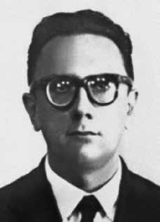

Luiz
Ignácio
Maranhão
Filho
CIRCUNSTÂNCIAS DA MORTE
Luiz Ignácio Maranhão Filho foi preso por agentes do Estado brasileiro no dia 3 de abril de 1974, na mesma ocasião em que João Massena Melo e Walter de Souza Ribeiro, também ligados ao Partido Comunista Brasileiro (PCB). Passados mais de quarenta anos, ainda não é possível apresentar uma versão definitiva para os eventos que culminaram no desaparecimento de Luiz Ignácio. Ele teria sido preso na capital paulista, em uma praça, por agentes policiais. O Estado brasileiro jamais reconheceu oficialmente a prisão desse militante do PCB, cujo nome passou a figurar em listas de desaparecidos políticos desde a década de 1970. Novos dados sobre o caso surgiram por meio de pesquisa promovida pela Comissão Estadual da Verdade “Rubens Paiva” (CEV-SP), que localizou documentação produzida pelo Centro de Informações da Marinha (Cenimar). Em documento de outubro de 1974, analistas daquele órgão de informação reconheceram a prisão e revelaram preocupação com a denúncia feita pelo PCB e pela esposa de Luiz Ignácio, Odete Maranhão, de que ele havia sido capturado pelos órgãos de repressão. O advogado contratado por Odete Maranhão, Aldo Lins e Silva, buscou informações em diversas delegacias, órgãos e repartições públicas e conseguiu marcar audiência com o general Ednardo D’Ávila de Mello, então comandante do II Exército, que lhe comunicou que havia procurado Erasmo Dias, então Secretário de Segurança Pública no estado de São Paulo, mas que não obtivera nenhuma informação. O general assegurou que Luiz Ignácio não estava sob responsabilidade de seus comandos. Em setembro de 1974, a esposa e familiares de outros membros do PCB desaparecidos, como David Capistrano, João Massena Melo e Walter de Souza Ribeiro, encaminharam carta ao presidente da República, exigindo o direito de serem julgados e de terem assistência jurídica. Em 1975, documento do Centro de Informações da Aeronáutica (Cisa), ao analisar a campanha pela busca aos desaparecidos políticos, promovida por familiares de vítimas, destacou a informação de que alguns membros do Comitê Central do Partido Comunista estariam foragidos, entre eles Luiz Ignácio Maranhão Filho. Em 1977, no primeiro número do jornal Anistia! do Comitê 1o de Maio, o nome de Luiz Ignácio foi incluído entre aqueles que não tiveram a prisão reconhecida pelas autoridades e que estariam possivelmente mortos. Um ano depois, seu nome foi incluído em uma lista de mortos e desaparecidos políticos entregue por D. Paulo Evaristo Arns ao então presidente dos Estados Unidos, Jimmy Carter. Desde então, diversas versões sobre o paradeiro de Luiz Ignácio foram divulgadas. No dia 8 de abril de 1987, o ex-médico psiquiatra Amílcar Lobo revelou, em entrevista à revista IstoÉ, que presenciou sessão de tortura de Luiz Ignácio Maranhão Filho no Destacamento de Operações de Informações – Centro de Operações de Defesa Interna (DOI-CODI) do I Exército, no Rio de Janeiro (RJ). Alguns anos depois, Marival Chaves Dias do Canto, ex-sargento do Exército e ex-agente do DOI-CODI/SP, concedeu entrevista à revista Veja, publicada em 18 de novembro de 1992, em que revelou que Luiz Ignácio Maranhão Filho foi torturado e morto, com uma “injeção para matar cavalo”, num centro clandestino no Município de Itapevi (SP). A denúncia de Marival Chaves Dias insere a execução de Luiz Ignácio no contexto da “Operação Radar”, ação coordenada pelos órgãos da repressão com o intuito de desarticular o PCB e executar seus dirigentes. O corpo de Luiz Ignácio Maranhão teria sido atirado no Rio Novo ou na Represa de Jurumirim, no interior do estado de São Paulo, perto do município de Avaré. A Casa de Itapevi, localizada na estrada que liga Barueri a Itapevi, na região metropolitana de São Paulo, é apontada como centro clandestino utilizado pelo DOICODI do II Exército e pelo CIE para tortura e execução dos presos da “Operação Radar”. A Casa de Itapevi operou entre 1974 e 1975 sob comando do CODI-DOI do II Exército, tendo à frente o tenente-coronel de artilharia Audir Santos Maciel, o “Doutor Silva”. A casa teria sido arranjada pelo major André Pereira Leite Filho, o “Doutor Edgar” e, segundo depoimento de Marival Chaves à CNV, de 10 de maio de 2013, nela teriam sido mortos Luiz Ignácio Maranhão Filho, Hiran Pereira de Lima, Orlando da Rosa Silva Bonfim Júnior, João Massena Melo, Élson Costa, Itair José Veloso, Jayme Amorim Miranda e José Montenegro de Lima.i Essa versão difere daquela apresentada pelo ex-delegado do DOPS do Espírito Santo, Cláudio Guerra que, em depoimento à CNV em 23 de julho de 2014, ii alegou que transportou o corpo de Luiz Ignácio Maranhão Filho da “Casa da Morte”, em Petrópolis (RJ), para a usina Cambahyba, na região de Campos dos Goytacazes, norte do Rio de Janeiro. Ali, o corpo de do militante teria sido incinerado. iii Luiz Ignácio Maranhão Filho permanece desaparecido.
Luiz Ignácio Maranhão Filho was arrested by agents of the Brazilian State on April 3, 1974, on the same occasion as João Massena Melo and Walter de Souza Ribeiro, also linked to the Brazilian Communist Party (PCB). More than forty years later, it is still not possible to present a definitive version of the events that culminated in the disappearance of Luiz Ignacio. He was reportedly arrested in the capital of São Paulo, in a square, by police officers. The Brazilian State never officially recognized the arrest of this PCB activist, whose name appeared on lists of politically disappeared people since the 1970s. New data on the case emerged through research promoted by the “Rubens Paiva” State Truth Commission (CEV-SP), which located documentation produced by the Navy Information Center (Cenimar). In a document from October 1974, analysts from that information agency acknowledged the arrest and revealed concern about the complaint made by the PCB and Luiz Ignácio's wife, Odete Maranhão, that he had been captured by repression agencies. The lawyer hired by Odete Maranhão, Aldo Lins e Silva, sought information at various police stations, agencies and public offices and managed to schedule an appointment with General Ednardo D’Ávila de Mello, then commander of the II Army, who informed him that he had contacted Erasmo Dias, then Secretary of Public Security in the state of São Paulo, but that he had not obtained any information. The general assured that Luiz Ignacio was not under the responsibility of his commands. In September 1974, the wife and family members of other missing PCB members, such as David Capistrano, João Massena Melo and Walter de Souza Ribeiro, sent a letter to the President of the Republic, demanding the right to be tried and to have legal assistance. In 1975, a document from the Air Force Information Center (Cisa), when analyzing the campaign to search for missing politicians, promoted by victims' families, highlighted the information that some members of the Central Committee of the Communist Party were on the run, including Luiz Ignácio Maranhão Filho. In 1977, in the first issue of the newspaper Amnesty! of the 1o de Maio Committee, the name of Luiz Ignacio was included among those whose arrest was not recognized by the authorities and who were possibly dead. A year later, his name was included in a list of dead and missing politicians delivered by D. Paulo Evaristo Arns to the then president of the United States, Jimmy Carter. Since then, several versions of Luiz Ignacio's whereabouts have been released. On April 8, 1987, former psychiatrist Amílcar Lobo revealed, in an interview with IstoÉ magazine, that he witnessed a torture session with Luiz Ignácio Maranhão Filho at the Information Operations Detachment – Internal Defense Operations Center (DOI-CODI) of the 1st Army, in Rio de Janeiro (RJ). A few years later, Marival Chaves Dias do Canto, former Army sergeant and former DOI-CODI/SP agent, gave an interview to Veja magazine, published on November 18, 1992, in which he revealed that Luiz Ignácio Maranhão Filho was tortured and killed, with an “injection to kill a horse”, in a clandestine center in the municipality of Itapevi (SP). Marival Chaves Dias' complaint places the execution of Luiz Ignácio in the context of “Operation Radar”, an action coordinated by repression bodies with the aim of dismantling the PCB and executing its leaders. Luiz Ignácio Maranhão's body would have been thrown into the Rio Novo or the Jurumirim Dam, in the interior of the state of São Paulo, near the municipality of Avaré. Casa de Itapevi, located on the road that connects Barueri to Itapevi, in the metropolitan region of São Paulo, is identified as a clandestine center used by the DOICODI of the II Army and the CIE to torture and execute prisoners from “Operation Radar”. The Casa de Itapevi operated between 1974 and 1975 under the command of CODI-DOI of the II Army, led by artillery lieutenant colonel Audir Santos Maciel, known as “Doctor Silva”. The house would have been arranged by Major André Pereira Leite Filho, “Doctor Edgar” and, according to Marival Chaves' statement to the CNV, on May 10, 2013, Luiz Ignácio Maranhão Filho, Hiran Pereira de Lima, Orlando da Rosa Silva Bonfim Júnior, João Massena Melo, Élson Costa, Itair José Veloso, Jayme Amorim Miranda and José Montenegro de Lima were killed in it. This version differs from that presented by the former DOPS delegate from Espírito Santo, Cláudio Guerra who, in a statement to the CNV on July 23, 2014, ii claimed that he transported the body of Luiz Ignácio Maranhão Filho from the “Casa da Morte”, in Petrópolis (RJ), to the Cambahyba plant, in the Campos dos Goytacazes region, north of Rio de Janeiro. There, the militant's body would have been incinerated. iii Luiz Ignácio Maranhão Filho remains missing.
Luiz Ignácio Maranhão Filho fue detenido por agentes del Estado brasileño el 3 de abril de 1974, en la misma ocasión que João Massena Melo y Walter de Souza Ribeiro, también vinculados al Partido Comunista Brasileño (PCB). Más de cuarenta años después, todavía no es posible presentar una versión definitiva de los hechos que culminaron con la desaparición de Luiz Ignacio. Según los informes, agentes de policía lo detuvieron en una plaza de la capital de São Paulo. El Estado brasileño nunca reconoció oficialmente la detención de este activista del PCB, cuyo nombre figuraba en las listas de desaparecidos políticos desde los años 1970. Nuevos datos sobre el caso surgieron a través de una investigación impulsada por la Comisión Estatal de la Verdad “Rubens Paiva” (CEV-SP), que localizó documentación elaborada por el Centro de Información de la Marina (Cenimar). En un documento de octubre de 1974, analistas de esa agencia de información reconocieron la detención y revelaron preocupación por la denuncia del PCB y de la esposa de Luiz Ignácio, Odete Maranhão, de que había sido capturado por organismos de represión. El abogado contratado por Odete Maranhão, Aldo Lins e Silva, buscó información en varias comisarías, agencias y oficinas públicas y logró concertar una cita con el general Ednardo D’Ávila de Mello, entonces comandante del II Ejército, quien le informó que se había puesto en contacto con Erasmo Dias, entonces secretario de Seguridad Pública del estado de São Paulo, pero que no había obtenido ninguna información. El general aseguró que Luiz Ignacio no estaba bajo la responsabilidad de sus mandos. En septiembre de 1974, la esposa y familiares de otros miembros del PCB desaparecidos, como David Capistrano, João Massena Melo y Walter de Souza Ribeiro, enviaron una carta al Presidente de la República, exigiendo el derecho a ser juzgado y a recibir asistencia jurídica. En 1975, un documento del Centro de Información de la Fuerza Aérea (Cisa), al analizar la campaña de búsqueda de políticos desaparecidos, promovida por familiares de las víctimas, destacó la información de que algunos miembros del Comité Central del Partido Comunista estaban prófugos, entre ellos Luiz Ignácio Maranhão Filho. En 1977, en el primer número del periódico ¡Amnistía! del Comité 1o de Mayo, el nombre de Luiz Ignacio fue incluido entre aquellos cuya detención no fue reconocida por las autoridades y que posiblemente estaban muertos. Un año después, su nombre fue incluido en una lista de políticos muertos y desaparecidos entregada por D. Paulo Evaristo Arns al entonces presidente de Estados Unidos, Jimmy Carter. Desde entonces han salido a la luz varias versiones sobre el paradero de Luiz Ignacio. El 8 de abril de 1987, el ex psiquiatra Amílcar Lobo reveló, en entrevista con la revista IstoÉ, haber presenciado una sesión de tortura con Luiz Ignácio Maranhão Filho en el Destacamento de Operaciones de Información – Centro de Operaciones de Defensa Interna (DOI-CODI) del 1.º Ejército, en Río de Janeiro (RJ). Algunos años más tarde, Marival Chaves Dias do Canto, ex sargento del Ejército y ex agente del DOI-CODI/SP, concedió una entrevista a la revista Veja, publicada el 18 de noviembre de 1992, en la que reveló que Luiz Ignácio Maranhão Filho fue torturado y asesinado, con una “inyección para matar un caballo”, en un centro clandestino del municipio de Itapevi (SP). La denuncia de Marival Chaves Dias sitúa la ejecución de Luiz Ignácio en el contexto de la “Operación Radar”, acción coordinada por órganos de represión con el objetivo de desmantelar el PCB y ejecutar a sus dirigentes. El cuerpo de Luiz Ignácio Maranhão habría sido arrojado al Río Novo o a la Represa Jurumirim, en el interior del estado de São Paulo, cerca del municipio de Avaré. La Casa de Itapevi, ubicada en la vía que conecta Barueri con Itapevi, en la región metropolitana de São Paulo, es identificada como un centro clandestino utilizado por el DOICODI del II Ejército y la CIE para torturar y ejecutar a prisioneros de la “Operación Radar”. La Casa de Itapevi funcionó entre 1974 y 1975 bajo el mando del CODI-DOI del II Ejército, dirigido por el teniente coronel de artillería Audir Santos Maciel, conocido como “Doctor Silva”. La casa habría sido arreglada por el mayor André Pereira Leite Filho, “Doctor Edgar” y, según declaración de Marival Chaves a la CNV, el 10 de mayo de 2013, en ella fueron asesinados Luiz Ignácio Maranhão Filho, Hiran Pereira de Lima, Orlando da Rosa Silva Bonfim Júnior, João Massena Melo, Élson Costa, Itair José Veloso, Jayme Amorim Miranda y José Montenegro de Lima. Esta versión difiere de la presentada por el ex delegado del DOPS de Espírito Santo, Cláudio Guerra, quien, en declaración a la CNV el 23 de julio de 2014, afirmó haber transportado el cuerpo de Luiz Ignácio Maranhão Filho desde la “Casa da Morte”, en Petrópolis (RJ), hasta la planta de Cambahyba, en la región de Campos dos Goytacazes, al norte de Río de Janeiro. Allí el cuerpo del militante habría sido incinerado. iii Luiz Ignácio Maranhão Filho sigue desaparecido.